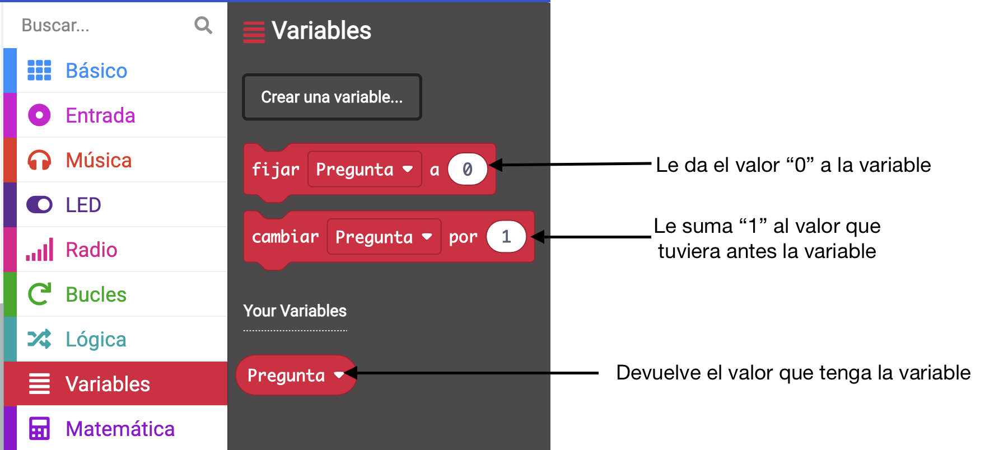

Prácticas
Un acelerómetro es un sensor que mide las aceleraciones de un cuerpo, la fuerza generada por una vibración o el cambio en el movimiento de un cuerpo.
Una aplicación de este sistema se encuentra en los airbag de los automóviles. Cuando se frena de forma brusca, el sensor
detecta una desaceleración fuerte, haciendo que se despliegue el airbag.
También se usa para medir los pasos en los relojes de actividad y en smartphones.
Micro:bit lleva incorporado un acelerómetro en el mismo chip que el sensor magnético, es decir, en el círculo rojo que ves en esta imagen:

Este acelerómetro se encarga de medir las aceleraciones a las que puede estar sometida la placa, tales como cuando se gira, se sacude o se cae.
Para usar el valor del acelerómetro en nuestros programas, usaremos un bloque de evento de MakeCode que se llama si agitado:
Los bloques que metamos ahí se ejecutarán cuando se agite la placa. Sin embargo, el acelerómetro nos permite detectar muchos más movimientos, no solo la agitación. Si pulsas la flechita del bloque, se despliega un menú con todas las opciones que podemos detectar gracias al acelerómetro:
Para simular los diferentes movimientos de la placa cuando pruebas tu programa en la placa virtual de MakeCode, aparece un control. Si, por ejemplo, utilizas el bloque tal cual (si agitado), aparece un botón blanco junto al que pone "SHAKE" y, al pulsarlo, será como si agitaras la placa.
Vamos a ver algunos ejemplos de uso del acelerómetro en prácticas guiadas, antes de hacer la tarea de este sensor. De paso, vas a practicar el uso de variables en MakeCode.
Práctica 1 - Bola 8
En esta práctica, se va a realizar un programa que emule un juego en el que al mover la placa nos ofrezca una respuesta, al azar, a una pregunta. Se basa en el juego “Bola 8 mágica”.
Es un divertido proceso de predicción que responde a tus preguntas. Hazle a tu bola mágica cualquier pregunta y te responderá más o menos claramente.
El programa funcionará de la siguiente manera:
- Agitamos la placa (nuestra "bola 8") mientras hacemos una pregunta.
- La placa nos ofrecerá tres respuestas, elegidas al azar:
- Un tic para decir Sí
- Una equis para decir No
- Una cara neutra que nos indica que no está segura de la respuesta
Para saber qué icono mostrar cuando se agite la placa, haremos lo siguiente:
- Cuando se agite la placa, elegiremos un número al azar del 1 al 3.
- Guardaremos ese número en una variable que habremos creado con el nombre de "Pregunta"
- Preguntaremos el valor de la variable "Pregunta" (con bloque si entonces) y, según sea el valor, mostraremos en la pantalla el icono correspondiente:
- Valor 1: Sí
- Valor 2: No
- Valor 3: Indefinido
¿Te ves capaz de escribir el código por tus propios medios? Te doy una ayuda para crear la variable.
Si pulsas en la categoría "Variables", verás que tienes un botón para crear una variable nueva:
Cuando pulses ese botón te aparecerá una ventana para escribir el nombre que le quieres dar a la variable. En este caso, se llamará "Pregunta":
Cuando pulses en "Aceptar" habrás creado la variable y, a partir de ese momento, tendrás disponibles tres nuevos bloques para utilizar la variable en tu programa:

Si tienes problemas con el código, aquí tienes la solución de esta práctica, como siempre:
 Y aquí un ejemplo de funcionamiento utilizando el botón SHAKE para simular que agitamos la placa:
Y aquí un ejemplo de funcionamiento utilizando el botón SHAKE para simular que agitamos la placa:
Práctica 2 - Contador automático
Vamos a hacer un programa que sirva para contar cosas. El funcionamiento debe ser el siguiente:
-
Al empezar el proceso se muestra en la matriz LED el número 0.
-
Cada vez que se agite la placa micro:bit, debe aumentar en uno el valor del número mostrado en el LED. Es decir, cada sacudida suma 1 al valor anterior.
-
Cuando se llegue al número 9, la placa debe de mostrar un icono durante dos segundos.
-
Después, iniciar de nuevo la cuenta en 0.
Te doy algunas pistas para que intentes hacer el programa por tu cuenta, a ver si lo consigues.
Para hacer el programa utilizaremos una variable llamada "Contador". Al iniciar, le daremos el valor "0" a esta variable.
Cada vez que se agite la placa, preguntaremos si "Contador" ya vale "9". Según sea la respuesta haremos lo siguiente:
- Si vale "9" mostraremos en la matriz LED un icono cualquiera durante dos segundos y le daremos a la variable el valor "0".
- Si no vale "9", le sumaremos 1 al valor que tuviera anteriormente "Contador".
- En cualquier caso, mostraremos en la pantalla el valor de "Contador"
Con estos pasos, conseguirás que el programa funcione como queremos, que sería así:
 Como siempre, aquí tienes el programa solución de esta práctica, por si tienes problemas:
Como siempre, aquí tienes el programa solución de esta práctica, por si tienes problemas: